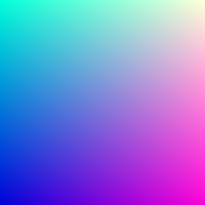

Ray Tracing
Notes on Ray Tracing in One Weekend
Table of Contents
1. Output An Image
1.1. PPM Image Format
Usually it details some sort of encoding - P3 being colors in ASCII.
Then new line followed by Num Cols space, Num Rows.
The next line is a single number detailing the scale (255 usually denotes max color).
Then R G B space separated values times the number of columns per row.
Then you have Num Rows rows to get you the final image.
1.1.1. Example
Source:
#include <iostream>
using namespace std;
int main() {
const int image_width = 256;
const int image_height = 256;
cout << "P3" << endl << image_width << " " << image_height << endl
<< "255" << endl;
for (int j = image_height - 1; j >= 0; --j) {
for (int i = 0; i < image_width; ++i) {
auto r = double(i) / (image_width - 1);
auto g = double(j) / (image_height - 1);
auto b = 0.25;
int ir = static_cast<int>(255.999 * r);
int ig = static_cast<int>(255.999 * g);
int ib = static_cast<int>(255.999 * b);
// for each pixel
cout << ir << " " << ig << " " << ib << endl;
}
}
}
Output:
2. Vec3 Class
A 3D vector class that's used for:
- Colors
- Locations
- Directions
- Offsets
- etc.
There will be two aliases created for vec3: point3 and color. This is just used to clarify intent and use.
2.1. Vec3.h
Code for Vec3: vec3.h
Note: This is just for showing. The code is stored as a file here.
#ifndef VEC3_H
#define VEC3_H
#include <iostream>
class vec3 {
public:
vec3() : e{0, 0, 0} {}
vec3(double e0, double e1, double e2) : e{e0, e1, e2} {}
// getter methods
double x() const {return e[0]}
double y() const {return e[1]}
double z() const {return e[2]}
vec3 operator-() const { return vec3(-e[0], -e[1], -e[2]); }
double operator[](int i) const {return e[i]; }
double& operator[](int i) {return e[i]; }
// adding
vec3 operator+=(const vec3 &v) {
for (int i = 0; i < 3; ++i) {
e[i] += v.e[i];
}
return *this;
}
// scalar multiplication
vec3& operator*=(const double t) {
for (int i = 0; i < 3; ++i) {
e[i] *= t;
}
return *this;
}
// scalar division
vec3& operator/=(const double t) {
return *this *= 1/t;
}
double length() const {
// return std::sqrt(length_squared());
return 1.0;
}
double length_squared() const {
return e[0]*e[0] + e[1]*e[1] + e[2]*e[2];
}
public:
double e[3];
};
// Type aliases for vec3
using point3 = vec3; // used for 3D points
using color = vec3; // used for RGB color
// vec3 Utility Functions
inline std::ostream& operator<<(std::ostream &out, const vec3 &v) {
return out << v.e[0] << ' ' << v.e[1] << ' ' << v.e[2];
}
inline vec3 operator+(const vec3 &u, const vec3 &v) {
return vec3(u.e[0] + v.e[0], u.e[1] + v.e[1], u.e[2] + v.e[2]);
}
inline vec3 operator-(const vec3 &u, const vec3 &v) {
return vec3(u.e[0] - v.e[0], u.e[1] - v.e[1], u.e[2] - v.e[2]);
}
inline vec3 operator*(const vec3 &u, const vec3 &v) {
return vec3(u.e[0] * v.e[0], u.e[1] * v.e[1], u.e[2] * v.e[2]);
}
inline vec3 operator*(double t, const vec3 &v) {
return vec3(t*v.e[0], t*v.e[1], t*v.e[2]);
}
inline vec3 operator*(const vec3 &v, double t) {
return t * v;
}
inline vec3 operator/(vec3 v, double t) {
return (1/t) * v;
}
inline double dot(const vec3 &u, const vec3 &v) {
return u.e[0] * v.e[0]
+ u.e[1] * v.e[1]
+ u.e[2] * v.e[2];
}
inline vec3 cross(const vec3 &u, const vec3 &v) {
return vec3(u.e[1] * v.e[2] - u.e[2] * v.e[1],
u.e[2] * v.e[0] - u.e[0] * v.e[2],
u.e[0] * v.e[1] - u.e[1] * v.e[0]);
}
inline vec3 unit_vector(vec3 v) {
return v / v.length();
}
#endif
2.2. color.h
Code for Color Utility: color.h
Saved as a header here.
#ifndef COLOR_H
#define COLOR_H
#include "vec3.h"
#include <iostream>
void write_color(std::ostream &out, color pixel_color) {
// Write the translated [0,255] value of each color component.
out << static_cast<int>(255.999 * pixel_color.x()) << ' '
<< static_cast<int>(255.999 * pixel_color.y()) << ' '
<< static_cast<int>(255.999 * pixel_color.z()) << '\n';
}
#endif
2.3. Revisiting Example 1.1.1
Update the old example but this time using the color class and using write_color. I also added
more blue hue to all the pixels.
Source:
#include "util/color.h"
#include "util/vec3.h"
#include <iostream>
using namespace std;
int main() {
const int image_width = 256;
const int image_height = 256;
cout << "P3" << endl << image_width << " " << image_height << endl
<< "255" << endl;
for (int j = image_height - 1; j >= 0; --j) {
for (int i = 0; i < image_width; ++i) {
color pixel(double(i) / (image_width - 1),
double(j) / (image_height - 1), 0.85);
write_color(std::cout, pixel);
}
}
}
Output:

3. Rays
3.1. Ray Class
A ray is a function, \(P(t) = A + tb\), \(t \in \mathbb{R}\). A is the ray origin, and b is the ray vector.
#ifndef RAY_H
#define RAY_H
#include "vec3.h"
class ray {
public:
ray() {}
ray(const point3& origin, const vec3& direction)
: orig(origin), dir(direction)
{}
point3 origin() const { return orig; }
vec3 direction() const { return dir; }
point3 at(double t) const {
return orig + t*dir;
}
public:
point3 orig;
vec3 dir;
};
#endif
3.2. Sending Rays into Scene
Its time to ray trace! The ray tracer sends rays through pixels and computes the color seen in the direction of those rays.
Here are the steps:
- Calculate the ray from the eye to the pixel.
- Determine which objects the ray intersects.
- Computer a color for that intersection point.
Some parameters we need:
- Aspect ratio
- Focal length This is the distance from the eye to the projection plane.?? IDK what this is, but its a plane in the back
- Eye/Camera This will be at the origin.
The y axis will be up, x axis to the right, and z axis moving backwards, because hand rules.
3.3. Example: Rendering a blue-to-white gradient, using Ray Tracing
Source
#include "util/color.h"
#include "util/ray.h"
#include "util/vec3.h"
#include <iostream>
// this function returns a color for which ray its on.
color ray_color(const ray& r) {
vec3 unit_direction = unit_vector(r.direction());
// this is to try and put the pixel in the center y
auto t = 0.5 * (unit_direction.y() + 1.0);
// the gradient color (blue-white) depends on where the
// y-value sits.
// higher y values -> more blue
return t * color(0.5, 0.7, 1.0) + (1 - t) * color(1.0, 1.0, 1.0);
}
int main() {
// image
double aspect = 16.0 / 9.0;
int height = 200;
int width = static_cast<int>(height * aspect);
// camera setup
double viewport_height = 2.0;
double viewport_width = viewport_height * aspect;
double focal_length = 1.0;
point3 origin(0.0, 0.0, 0.0);
vec3 horizontal(viewport_width, 0.0, 0.0);
vec3 vertical(0.0, viewport_height, 0.0);
vec3 lower_left_corner = origin - horizontal / 2 -
vertical / 2 - vec3(0.0, 0.0, focal_length);
// Render
std::cout << "P3\n" << width << " " << height
<< "\n255" << std::endl;
// loop
for (int j = height-1; j >= 0; --j) { // explanation: scans pixels L->R U->D
for (int i = 0; i < width; ++i) { // i thus needs to be in the inner loop
ray r(origin, vec3(double(i) * viewport_width / width,
double(j) * viewport_height / height, 0.0)
+ lower_left_corner - origin);
// color pixel = ray_color(r);
// double u = double(i) / (width-1); // fraction of width
// double v = double(j) / (height-1); // fraction of height
// // why write origin here? well its because the origin may not always be [0, 0, 0]
// ray r(origin, lower_left_corner + u * horizontal + v * vertical - origin);
color pixel = ray_color(r);
write_color(std::cout, pixel);
}
}
}
Output
The resultant image is a gradient from blue to white. Notice that not only is there a
vertical gradient, but also a horizontal one.
To explain this, we look at the ray_color function:
color ray_color(const ray& r) {
vec3 unit_direction = unit_vector(r.direction());
// transformation to make to from 0 to 1
auto t = 0.5 * (unit_direction.y() + 1.0);
// the gradient color (blue-white) depends on where the
// y-value sits.
// higher y values -> more blue
return t * color(0.5, 0.7, 1.0) + (1 - t) * color(1.0, 1.0, 1.0);
}
Unit vector makes the direction component of the ray unit length. This means that when we take the y component of all of those rays, the rays closer to the fringes when normalized dont extend as far into the y direction (because of some of the length contributed to the other components of the vector). We can also guarantee that no y component of any normalised vector will be greater than \(\pm 1\). We perform a transformation on the y scale to get a t that is \(0 \leq t \leq 1\). When \(t = 1\), we get blue, and when \(t = 0\) we get white. As a result the following is produced.

4. Adding a sphere to the scene
Time to add an object to the ray tracer!
4.1. Hit detection
Recall the equation for a sphere with center \((C_x, C_y, C_z)\): \[ (x-C_x)^2 + (y-C_y)^2 + (z-C_z)^2 = r^2 \]
So to determine if a point \((a, b, c)\) is in a sphere, you would check if \[ (x-C_x)^2 + (y-C_y)^2 + (z-C_z)^2 < r^2 \]
4.1.1. Expressing as vectors
Now, \((x-C_x)^2 + (y-C_y)^2 + (z-C_z)^2\) is great and all but
we need it to be in the form of vectors for the vec3 class.
Claim: \((\textbf{P - C})\cdot(\textbf{P - C}) = (x-C_x)^2 + (y-C_y)^2 + (z-C_z)^2\),
where \(P\) is a point \((x, y, z)\), and \(C = (C_x, C_y, C_z)\)
is the center of the sphere.
Thus, \[(\textbf{P-C})\cdot(\textbf{P-C}) = r^2 \]
4.1.2. Detecting if rays hit sphere
The above equation only answers whether a point \(\textbf{P}\) is on the sphere. We want to know if a ray ever hits the sphere. To do this, we substitute \(\textbf{P}\) for \(\textbf{P}(t)=\textbf{A} + t\textbf{B}\), and find value \(t\) such that this equation holds:
\begin{align*} (\textbf{P}(t) - \textbf{C})\cdot(\textbf{P}(t) - \textbf{C}) &= r^2 \\ (\textbf{A}+t\textbf{b} - \textbf{C})\cdot (\textbf{A}+t\textbf{b} - \textbf{C}) &= r^2 \\ (t\textbf{b} + (\textbf{A} - \textbf{C})) \cdot (t\textbf{b} + (\textbf{A} - \textbf{C})) &= r^2 \\ t^2\textbf{b}*\textbf{b} + 2t\textbf{b}\cdot(\textbf{A-C}) + (\textbf{A-C})\cdot(\textbf{A-C}) - r^2 &= 0 \\ \end{align*}1 intersection means the ray touches the sphere once, 2 intersections means the ray passes through the sphere. These intersections can be found in this quadratic equation, but we are only concerned with whether the ray hits the sphere.
We have a handy quadratic equation to find roots: \[x = \frac{-b \pm \sqrt{b^2 - 4ac}}{2a} \]
If \(b^2 - 4ac\) is negative, then there are no roots. So, for the ray \(\textbf{P}(t) = \textbf{A} + t\textbf{b}\) to not intersect the shape,
\begin{align*} (2b\cdot(\textbf{A-C}))^2 - 4(\textbf{b} \cdot b)((\textbf{A-C}) \cdot (\textbf{A-C}) - r^2) < 0 \\ \end{align*}must hold true.
4.1.3. Example: Adding the shape to our gradient
We create a function called hit_sphere which given a sphere, returns whether
the ray hits the sphere.
For now, we color the rays that hit the sphere red in our final result.
Source
#include "util/color.h"
#include "util/ray.h"
#include "util/vec3.h"
#include <iostream>
// check if the ray intersects the sphere
bool hit_sphere(const point3& center, double radius, const ray& ray) {
vec3 org_min_c = ray.origin() - center;
double a = dot(ray.direction(), ray.direction());
double b = dot(2*ray.direction(), org_min_c);
double c = dot(org_min_c, org_min_c) - radius*radius;
return b*b - 4*a*c >= 0; // i left it as geq 0 for now.
}
// this function returns a color for which ray its on.
color ray_color(const ray& r) {
if (hit_sphere(point3(0,0,-1), 0.5, r))
return color(1, 0, 0); // if hit sphere, then color it red.
vec3 unit_direction = unit_vector(r.direction());
// this is to try and put the pixel in the center y
auto t = 0.5 * (unit_direction.y() + 1.0);
// the gradient color (blue-white) depends on where the
// y-value sits.
// higher y values -> more blue
return t * color(0.5, 0.7, 1.0) + (1 - t) * color(1.0, 1.0, 1.0);
}
int main() {
// image
double aspect = 16.0 / 9.0;
int height = 200;
int width = static_cast<int>(height * aspect);
// camera setup
double viewport_height = 2.0;
double viewport_width = viewport_height * aspect;
double focal_length = 1.0;
point3 origin(0.0, 0.0, 0.0);
vec3 horizontal(viewport_width, 0.0, 0.0);
vec3 vertical(0.0, viewport_height, 0.0);
vec3 lower_left_corner = origin - horizontal / 2 -
vertical / 2 - vec3(0.0, 0.0, focal_length);
// Render
std::cout << "P3\n" << width << " " << height
<< "\n255" << std::endl;
// loop
for (int j = height-1; j >= 0; --j) { // explanation: scans pixels L->R U->D
for (int i = 0; i < width; ++i) { // i thus needs to be in the inner loop
ray r(origin, vec3(double(i) * viewport_width / width,
double(j) * viewport_height / height, 0.0)
+ lower_left_corner - origin);
color pixel = ray_color(r);
write_color(std::cout, pixel);
}
}
}
Output:

4.2. Surface Normals
A surface normal is the vector that is perpendicular to the surface of the point of intersection. For a point \(\textbf{P}\) on the sphere with center \(\textbf{C}\), the normal vector would be \(\textbf{P} - \textbf{C}\). Convince yourself that this is true. We also normalize this vector so that each component is between -1 and 1.
4.2.1. Example: Visualizing The Normal
For now, we use a color map to visualize the normal. Since each vector is normalized, each component is between -1 and 1, which we can map to an interval from 0 to 1. Then, we map \(x \mapsto r\), \(y \mapsto g\), and \(z \mapsto b\).
Let us visualize this: Source
#include "util/color.h"
#include "util/ray.h"
#include "util/vec3.h"
#include <iostream>
// check if the ray intersects the sphere, if so, return the t value of the ray
// that touches the sphere.
double hit_sphere(const point3& center, double radius, const ray& ray) {
vec3 org_min_c = ray.origin() - center;
double a = dot(ray.direction(), ray.direction());
double b = dot(2*ray.direction(), org_min_c);
double c = dot(org_min_c, org_min_c) - radius*radius;
double discriminant = b*b - 4*a*c;
if (discriminant < 0) {
// why return -1? When is it -1?
// means the object is behind the ray...
return -1.0;
} else {
return (-b - sqrt(discriminant)) / (2.0 * a);
}
}
// this function returns a color for which ray its on.
color ray_color(const ray& r) {
point3 sphere_center(0,0,-1);
double t = hit_sphere(sphere_center, 0.5, r);
if (t > 0.0) {
// calculate the norm (P - C)
vec3 norm = unit_vector(r.origin() + t * r.direction() - sphere_center);
return 0.5 * (norm + vec3(1, 1, 1));
}
vec3 unit_direction = unit_vector(r.direction());
// this is to try and put the pixel in the center y
t = 0.5 * (unit_direction.y() + 1.0);
// the gradient color (blue-white) depends on where the
// y-value sits.
// higher y values -> more blue
return t * color(0.5, 0.7, 1.0) + (1 - t) * color(1.0, 1.0, 1.0);
}
int main() {
// image
double aspect = 16.0 / 9.0;
int height = 200;
int width = static_cast<int>(height * aspect);
// camera setup
double viewport_height = 2.0;
double viewport_width = viewport_height * aspect;
double focal_length = 1.0;
point3 origin(0.0, 0.0, 0.0);
vec3 horizontal(viewport_width, 0.0, 0.0);
vec3 vertical(0.0, viewport_height, 0.0);
vec3 lower_left_corner = origin - horizontal / 2 -
vertical / 2 - vec3(0.0, 0.0, focal_length);
// Render
std::cout << "P3\n" << width << " " << height
<< "\n255" << std::endl;
// loop
for (int j = height-1; j >= 0; --j) { // explanation: scans pixels L->R U->D
for (int i = 0; i < width; ++i) { // i thus needs to be in the inner loop
ray r(origin, vec3(double(i) * viewport_width / width,
double(j) * viewport_height / height, 0.0)
+ lower_left_corner - origin);
color pixel = ray_color(r);
write_color(std::cout, pixel);
}
}
}
Output:
4.3. Simplifying the intersection code.
There is an extra 2 in the front of b in our equation. Suppose we then used \(b = 2h\) in our quadratic equation:
\begin{align*} \frac{-b \pm \sqrt{b^2 - 4ac}}{2a} \\ = \frac{-(2h) \pm \sqrt{(2h)^2 - 4ac}}{2a} \\ = \frac{-2h \pm \sqrt{4h^2 - 4ac}}{2a} \\ = \frac{-2h \pm 2\sqrt{h^2 - ac}}{2a} \\ = \frac{-h \pm \sqrt{h^2 - ac}}{a} \\ \end{align*}Now we use these changes in our code:
// check if the ray intersects the sphere, if so, return the t value of the ray
// that touches the sphere.
double hit_sphere(const point3& center, double radius, const ray& ray) {
vec3 org_min_c = ray.origin() - center;
double a = dot(ray.direction(), ray.direction());
double h_b = dot(ray.direction(), org_min_c);
double c = dot(org_min_c, org_min_c) - radius*radius;
double discriminant = h_b*h_b - a*c;
if (discriminant < 0) {
// why return -1? When is it -1?
// means the object is behind the ray...
return -1.0;
} else {
return (-h_b - sqrt(discriminant)) / a;
}
}